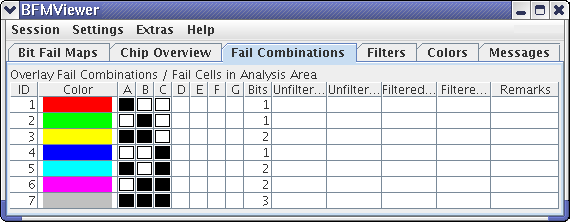
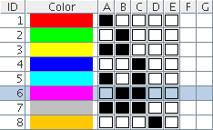

Fail Combinations
The Fail Combinations tab displays the possible combinations of cell failures in the active layers, the colors assigned to them, and statistical information on the combinations.

The tab consist of one list that contains all possible combinations of failures in the active layers. (A layer is active and included in this list if a bit fail map has been assigned to it or a higher layer.)
The tab consists of three lists - Available BFMs, BFM Layer Assignments, and BFM States - and a status field at the bottom.
The table contains these columns:
- ID: The number of the row.
- Color: The color by which this particular combination of failures is
indicated in the Chip Overview tab.
The colors are specified in the Colors tab.
Clicking a color hides that combination of failures in the Chip Overview tab. Clicking it again redisplays it.
- A-G: These columns contain the failure state
of the corresponding layer for this failure combination. A white square indicates no failure, a
black square indicates failure.
For example:

In this example, row 6 represents all cells who have failed in layers B and C but have not failed in layers A, D, and E. (Layers F and G contain no squares because they are not used.)
- Bits: The number of failures this combination represents, that is, the number of black squares in columns A-G.
- Unfiltered Excl.: The number of cells with this exact combination of
failures and passes.
For example, in the figure above, the Unfiltered Incl. cell of row 1 would show how many cells have a failure in layer A and passes in layers B through E.
- Unfiltered Incl.: The number of cells that share the failures of this
column, but not necessarily the passes.
For example, in the sample shown above, the Unfiltered Excl. cell of row 1 would show how many cells have a failure in layer A, irrespective of whether they have failures in the other layers. Thus, the number would include all cells with failures in layer A and B, failures in layer A and C, failures in layers A, B, and C, and so on.
- Filtered Excl.: This is the same as Unfiltered Excl., but if filter rules are active, only those cells are counted that also meet the conditions of at least one filter rule. (If no filters are active, this number if always the same as Unfiltered Excl.)
- Filtered Incl.: This is the same as Unfiltered Incl., but if filter rules are active, only those cells are counted that also meet the conditions of at least one filter rule. (If no filters are active, this number if always the same as Unfiltered Incl.)
- Remarks: Any comments that you have entered for this combination. Double-clicking a remark lets you edit it.
Clicking any of the column titles (except Color) sorts the table ascending by that column; shift-clicking sorts descending.
The shortcut menu of the tab contains these items:
- Set Selection Invisible: This makes all selected failure combinations invisible in the Chip Overview tab.
- Set Selection Visible: This makes all selected failure combinations visible in the Chip Overview tab.
- Invert Selection: This toggles the visibility of all selected failure combinations in the Chip Overview tab: Combinations that have been visible become invisible; combinations that have been invisible become visible.
- Set All Invisible: This makes all failure combinations invisible in the Chip Overview tab.
- Set All Visible: This makes all failure combinations visible in the Chip Overview tab.
- Invert All: This toggles the visibility of all failure combinations in the Chip Overview tab: Combinations that have been visible become invisible; combinations that have been invisible become visible.
You can select single or multiple rows in the Fail Combinations tab:
- Click to select a single row.
- Shift-click to select a contiguous range of rows.
- Ctrl-click to select multiple non-contiguous rows.
- Press Ctrl + A to select all rows.
Functional changes
- Introduced before SmarTest 6.3.2